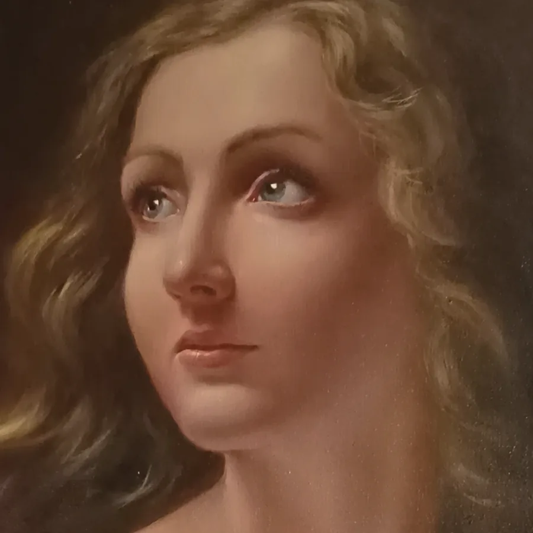
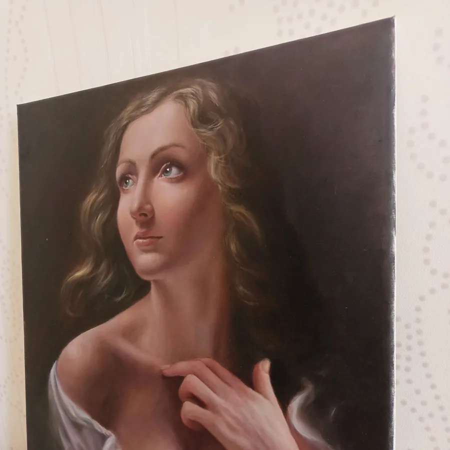
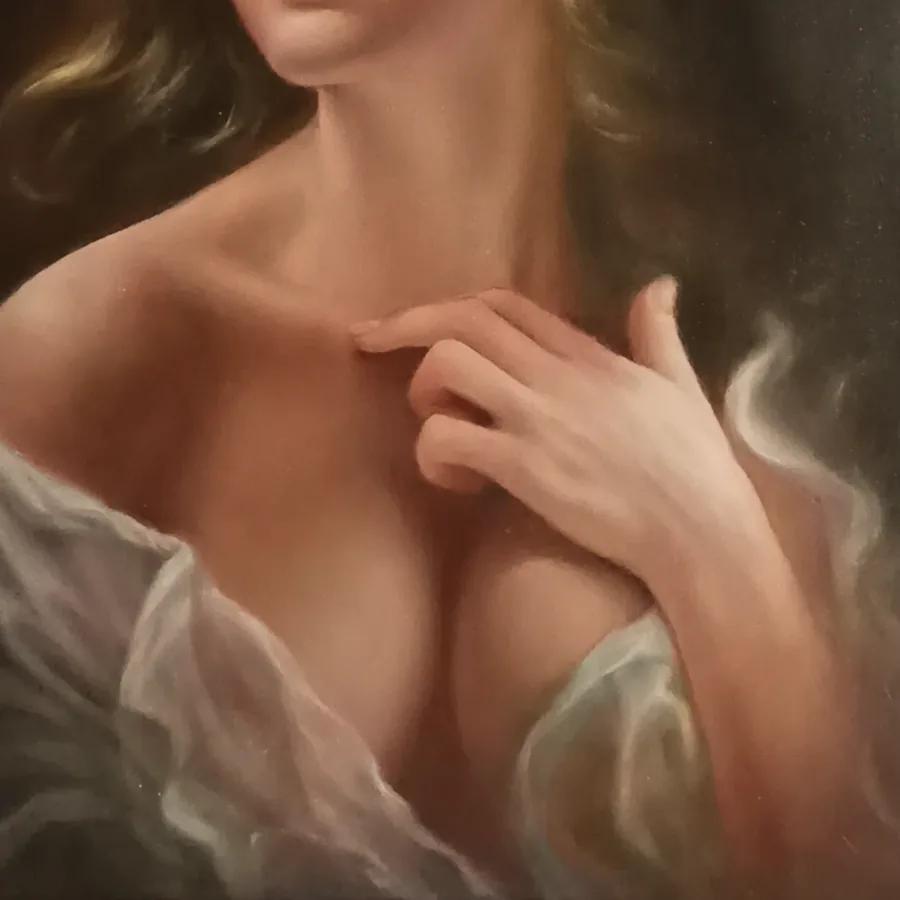

50 × 70 cm
50 × 70 cmPortrait · 2021
Custom Portrait
 60 × 70 cm
60 × 70 cmOriginal artwork
Artwork information
Custom Portrait represents the studio’s approach to a hand-painted oil portrait commission created from a client photograph. The example shows a light-haired woman in a bust-length composition, turned slightly to the side with a contemplative upward gaze. One hand rests near the chest, while softly folded white fabric frames the shoulders against a deep neutral background. Chiaroscuro lighting shapes the face and neck through gradual transitions from cream and warm tan to rich brown shadow. The result reflects traditional academic portrait painting while preserving a quiet, personal atmosphere. Each custom oil portrait from photo is developed as an original work on linen rather than a printed or digitally filtered image. The reference photograph guides likeness, pose, and character, while painterly decisions determine color, light, and emphasis. This service is suited to individual, family, commemorative, or gift commissions. Collectors receive a one-of-a-kind fine art portrait made through layered oil technique and careful visual interpretation.
Acquisition price$2,000–$3,500Available
- Worldwide free delivery
- 7-day returns accepted for eligible original works



Explore more
Related Works
50 × 70 cm